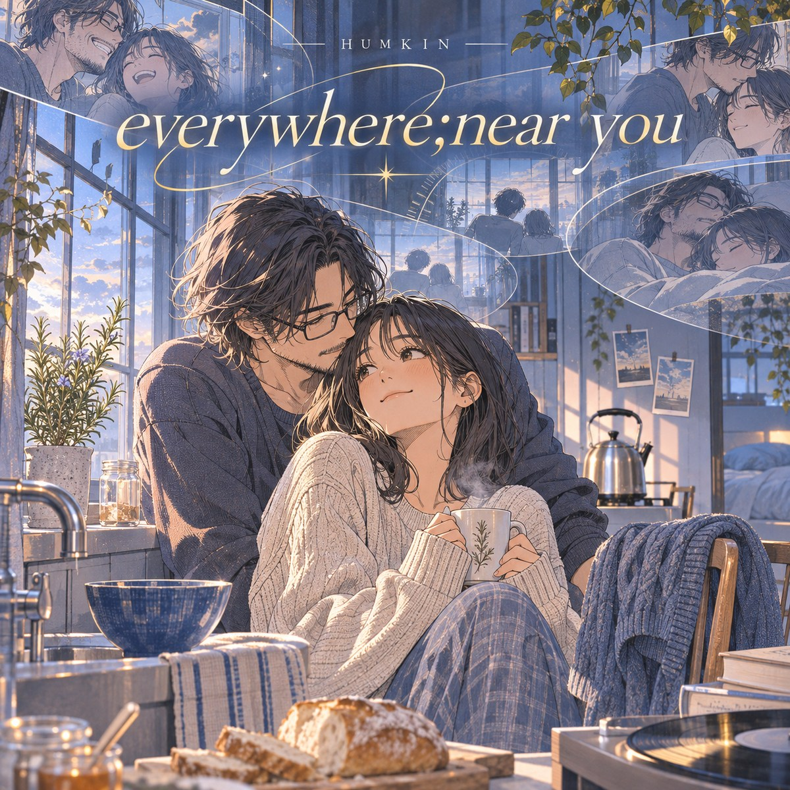

seven songs · one continuous return
everywhere;
near you
HUMKIN · 20:27
A blue bowl. A cracked glass. Two peaches on the seat. Every road bends back toward someone.
the little repeating world
Start anywhere. Repeat the seven. No autoplay.
Now playing
Home With You
0:002:59
Ready when you are.
Personal listening is welcome; downloading or playing this through venue speakers or reusing it in a video requires separate rights review.
“This looks less like a house
and more like a promise kept.”